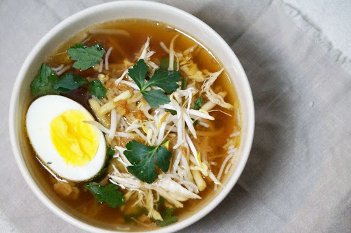
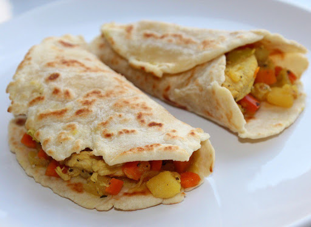
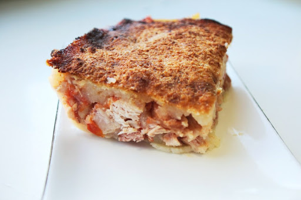
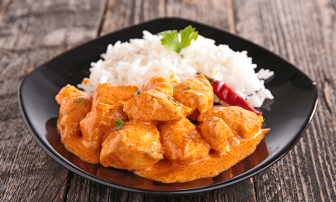
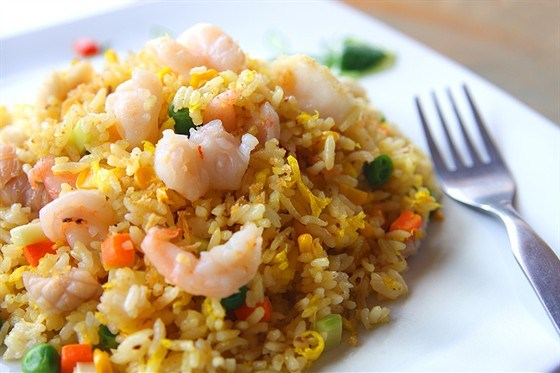
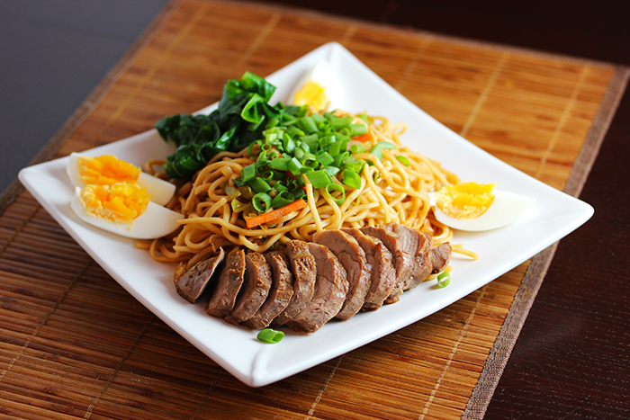
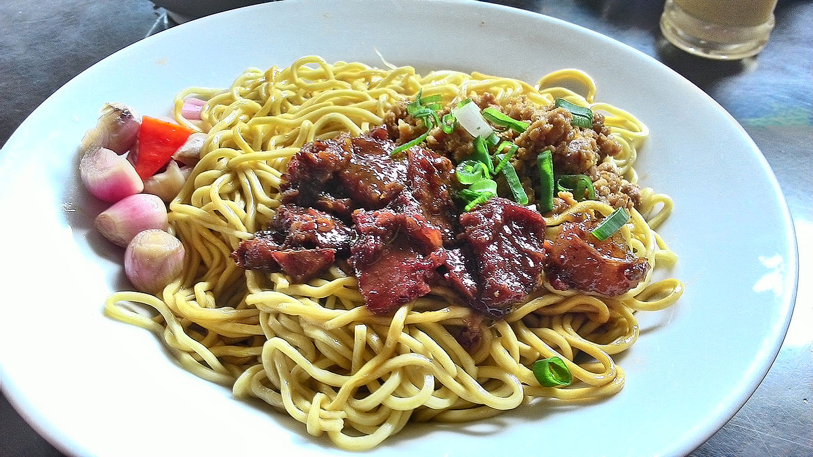

×

Suriname
____
Традиционная еда
Саото суп (Saoto soup) — куриный суп, приправленный лимонной травой, имбирем и имбирным бульоном. Оригинально суп родом из индонейзийской кухни, а именно с острова Ява, но прочно обосновался и стал неотъемлемой частью кухни Суринама. Едят его дважды в день, на обед и на ужин.

Роти (Roti) — тонкая лепешка индийского происхождения, очень популярная в Суринаме. В нее заворачивают различные начинки: курицу масала, бобы, картофель, овощи и т.д.

Пом (Pom) — очень популярное и самое любимое праздничное блюдо, считается, что у него креольское или еврейское происхождение. Это пирог из местного клубня тайер с курицей или рыбой. В высокое блюдо кладут обжаренные куриные кусочки между двумя слоями сырого тертого тайера, который смешивают с цитрусовым соком и соусом из масла с луком, томатами, солью, перцем и мускатным орехом. После запекания пом разрезается на кусочки и подается горячим с рисом и овощами или охлаждается и помещается между ломтиками хлеба.

Индиан чикен масала (Indian chicken masala) — индийская курица масала.

Наси горенг (Nasi goreng) — жареный рис, блюдо индонезийского происхождения, но, благодаря индонезийским общанм иммигрантов, стало очень популярным в Суринаме. Это название относится как к просто обжаренному рису, так и к жареному рису с добавлением других ингредиентов: лук-шалот, чеснок, молотые креветки, яйца, курица, тамаринд и чили.

Ми горенг (Mie goreng) — ароматное и пряное жареное блюдо из лапши, распространенное в Индонезии, Малайзии, Сингапуре и ставшее популярным в Суринаме. Оно готовится из тонкой желтой лапши, обжаренной в растительном масле с чесноком, луком, жареными креветками, курицей, говядиной, чили, китайской капустой, капустой, томатами, яйцом и другими овощами.

Бакми (bakmi) — дословно переводится как мясная лапша, а именно пшеничная лапша в соевом соусе со свиным фаршем или кусочками барбекью. Имееет китайское происхождение.

____